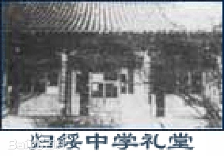
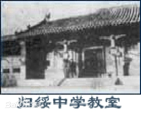
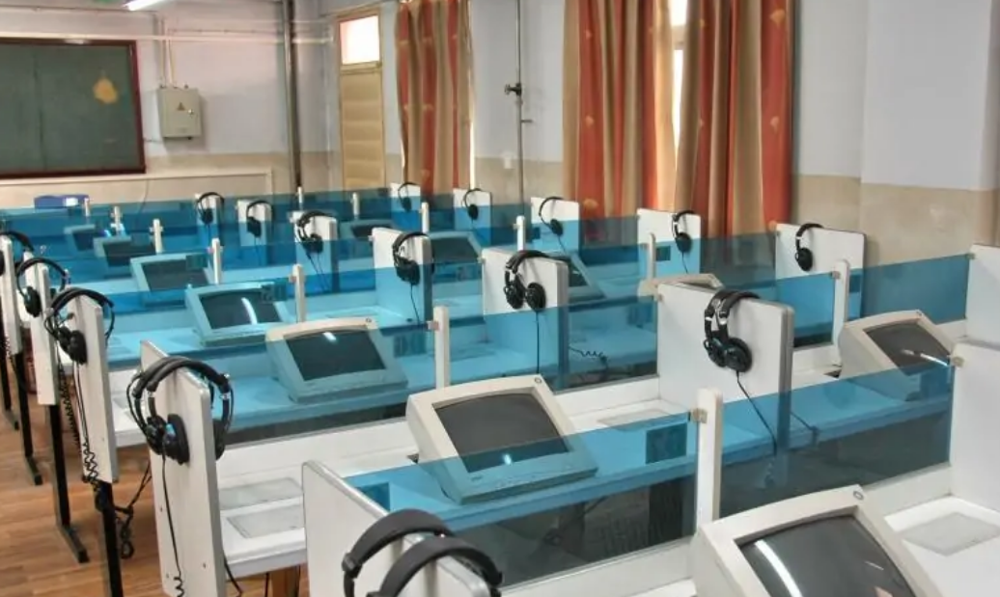
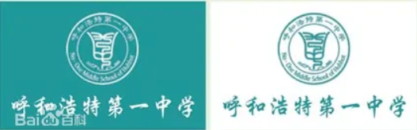
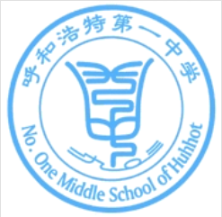
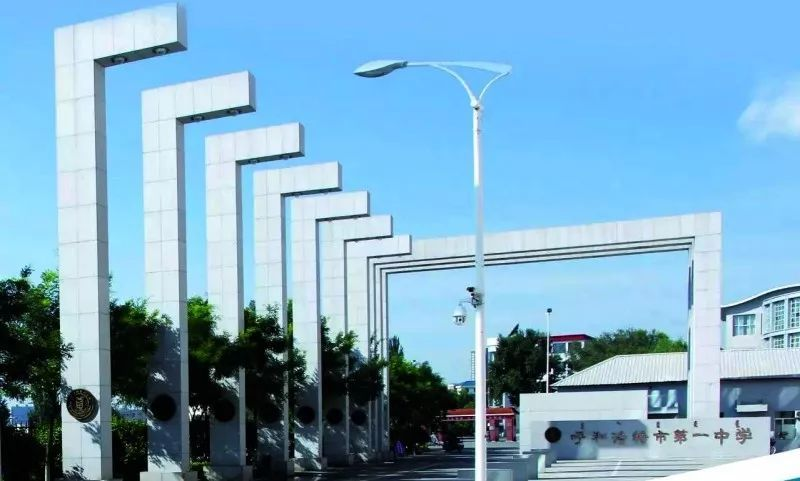
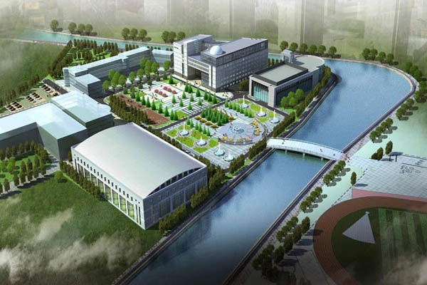
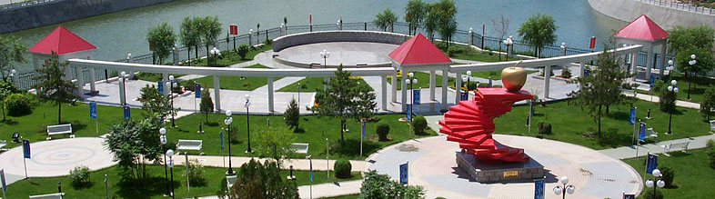
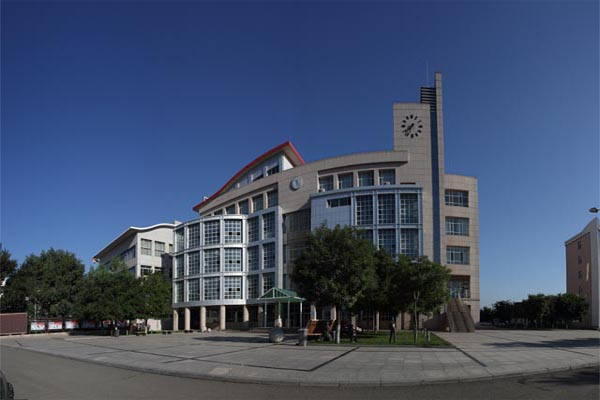

| 历史沿革 | |
|
1885年（清光绪十一年）清朝第41位任归绥道道员安祥创建“古丰书院”，因呼和浩特地区古时称丰州而得名。 光绪二十年（1903年）清朝第四十六任归绥兵备道道员朴寿根据清朝学务大臣令和《奏定学堂章程》改古丰书院为“归绥中学堂”（呼和浩特第一中学的百年建校历史从此时开始）。 1912年，绥远城将军贻谷创建了“绥远中学堂”，同年，绥远城将军裁撤，“绥远中学堂”并入“归绥中学堂”， 后“归绥中学堂”更名为“归绥中学校”，张璞出任归绥中学校长，结束了呼市地区满、汉、蒙分教的历史，归绥中学校成为呼市地区的最高学府。1925年“归绥中学校”改名为“绥远区立第一中学”，赵允义（国民党绥远省执委）任校长。 1929年因绥远特别行政区改为绥远省，绥远区立第一中学改为绥远省立第一中学 ，库耆隽任校长。 在1937年抗日战争时期，由于局势所迫学校解散，学校被日军占领。1939年流亡到后套（今巴盟杭锦后旗）的绥远省政府成立了“国立绥远中学”（绥中），由当时绥远省教育厅长闫伟筹办兼作校长，后绥中流亡宁夏，后又回到巴盟梅令庙，1949年“国立绥远中学”正式改名为“绥远省立绥远中学”。1946年春，抗日战争胜利后的几个月后，绥远省教育厅决定恢复归绥中学，由闫秉乾筹办 并任校长。1947年校长为刘佐儒。 1949年归绥解放，绥远省人民政府将省立归绥中学和省立绥远中学（即绥中）改称“绥远省立归绥第一中学”和“第二中学”，将原私立“正风、新绥”两校合并为省立第三中学。 1950年将省立一、二、三中学合并。正式命名为“绥远省立归绥中学”，第一位校长是冀丕杨。 1954年5月30日，根据内蒙古自治区人民政府令改“归绥中学”为“呼和浩特第一中学”。 1960年被定为省级重点中学。 1978年自治区政府重新确定一中为首批办好的重点中学。 1999年被内蒙古自治区党委、政府命名为“文明单位标兵”。 2000年被评为首批“普通中学示范性高中”。 |
  |
| 硬件设施 | |
|
学校建有双向宽带闭路电视网、编辑室、演播室。可同时传输12套不同的节目，节目源包括DVD、VCD、录像机、计算机，并能实现双向控制。学校的各种会议、活动都可通过电视网现场直播。 学校建有宽带计算机校园网，主干为千兆，百兆到桌面，全校任何一个办公室或教室都可以通过宽带访问Internet或通过卫星接收全国各地的教育资源。 学校配有物理、化学、生物实验室。并于2001年对实验设备进行了改造，以适应新课程对实验室的要求。 实验室设备齐全，生物实验室陈列有各种动植物标本。 |
 |
| 校旗 | |
|
校旗为两面。一面为蓝色，一面为白色。蓝色代表深邃、冷静，是呼和浩特第一中学的校色，取意于“青出于蓝而胜于蓝”，蓝色也是蒙古民族的吉祥色，象征广阔。白色代表纯洁无暇。中间图案由“徽标”和“呼和浩特第一中学”组成，上为“徽标”；下为“校名”，构成一个汉文“旦”的图形。 校旗象征“一中人”永远是清清白白做人，认认真真做事；象征“呼和浩特第一中学”象初升的太阳，在蓝天、白云间冉冉升起，蓬勃向上。 |
 |
| 校徽 | |
|
校徽的设计依据中国“天圆地方”的传统观念，设计为圆形，由大小双环构成基本图形。 双环上方为“呼和浩特第一中学”代表天，双环下方为英文名，代表地，天地相融，万物丛生，象征呼和浩特第一中学永远蒸蒸日上。 中间图案为篆体“一中”和“一九○三”(建校时间)变形组成。“一”为花瓣，“中”为花萼和花茎，“一九○三”为花根，象征“呼和浩特第一中学”象一株扎根祖国大地的花朵，含苞欲放，永葆青春活力。 |
 |
| 校园风光 | |
|   |   |